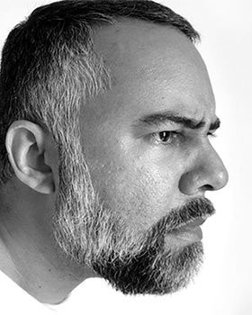

Kleyton L Silva | WDD 130
Hello! My name is Kleyton L Silva and I am from Recife, Brazil. I am 40 years old, married and live with my wife and stepson. I have a degree in graphic design and a postgraduate degree in digital design. I worked in graphics for several years, but today I have my own business and work most of the time from home. I enjoy technology, video games, movies, and traveling with my family. I believe in the importance of studies and the need to always evolve. I have always been curious and like to learn. I'm studying software development now and I hope to learn a lot.